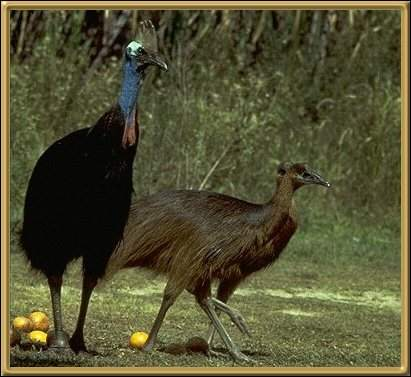

These birds tend to be shy and elusive, but can be aggressive and unpredictable around humans. The males incubate and care for the young. 1.5-2.0 metres (4'.9"- 6'5") Status - vulnerable.
Photographer: unknown